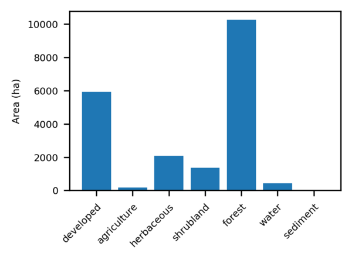
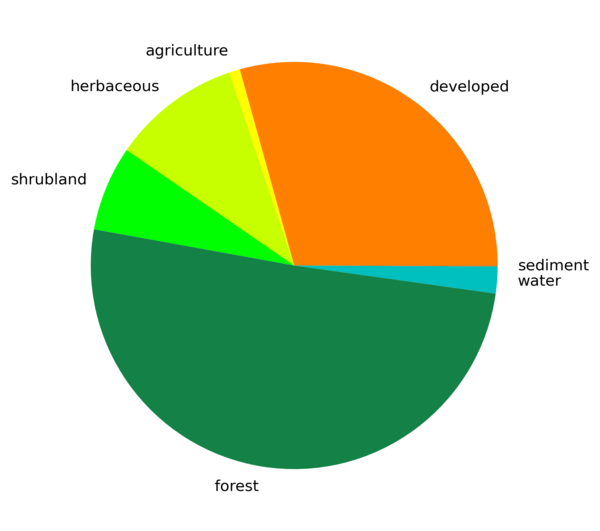
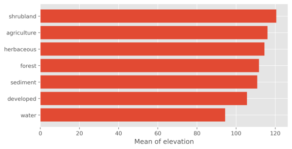

The statistic can be the count of cells, the surface area, or a percentage (see the unit option). If a value raster is given with the map option, the statistic can instead be the sum, mean, minimum or maximum of the value raster per zone. For count, the cells counted are the non-null cells of the value raster within each zone; without a value raster, all cells of the zone are counted.
The unit option applies to statistic=count and sets the reporting unit: cell count (cells), percent of the total, or surface area in m2, ha or km2. Areas are derived from the current region resolution.
Set plot_type=pie to draw a piechart instead of a barplot. A piechart requires non-negative values and is most meaningful for additive statistics (count, area, sum).
By default the bars and wedges are colored with the active Matplotlib style palette. Set a single color to override this, or use the -c flag to color them with the category colors of the zonal map. Border color and width can be set separately.
Layout options include sorting the bars/wedges (order), drawing the barplot horizontally (-h), adding grid lines (-g), rotating the category labels (rotate_labels), and printing the values on the bars or wedges (-n). A title, base fontsize, font family and labels for the value axis (y_label) and category axis (x_label) can be set as well. Axis labels do not apply to a piechart.
The plot can be styled with a Matplotlib style sheet through the style option, e.g. style=ggplot.
By default the plot is shown on screen. If output is given, the plot is written to that file, with the format determined by the file extension (e.g. output=plot.png). The size (plot_dimensions, in inches) and resolution (dpi) of the image can be set.
g.region raster=landclass96 r.barplot zones=landclass96 statistic=count unit=ha output=r_barplot_01.png rotate_labels=45

r.barplot -c zones=landclass96 statistic=count plot_type=pie output=r_barplot_02.png

r.barplot -h zones=landclass96 map=elevation statistic=mean order=descending style=ggplot output=r_barplot_03.png
